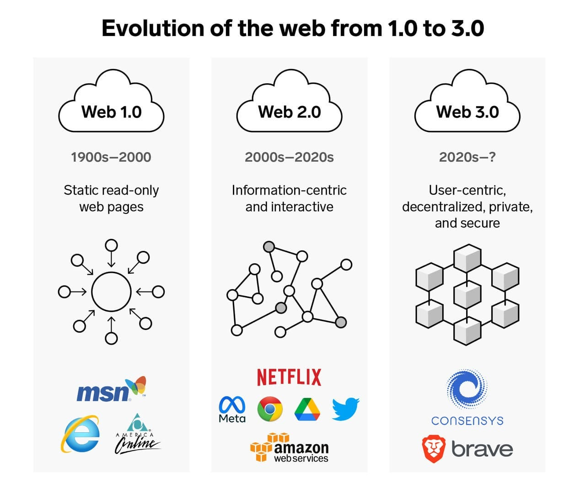

WEB2
In 1999, Darcy DiNucci coined the term "Web 2.0," which gained fame in 2004 at the First Web 2.0 conference (later Web 2.0 Summit) organized by Tim O'Reilly and Dale Dougherty. Web 2.0 is an enhanced version of Web 1.0, also known as the participative social web.
- Core Focus: Emphasizes user-generated content (e.g., blog posts, videos, reviews), usability (intuitive interfaces for all users), and interoperability (sites working seamlessly with each other via APIs and data sharing).
- Not Technical: Refers to changes in how web pages are designed and used, not technical specifications (e.g., shifting from static HTML pages to dynamic, user-editable platforms like wikis or social networks).
- Key Features: Enables interaction, collaboration, and social media dialogue in virtual communities (e.g., commenting, sharing, co-editing content in real time on platforms like YouTube, Wikipedia, or Facebook).
- Transition: Beneficial but gradual, without a clear moment of change (e.g., evolved through tools like blogs in the early 2000s, RSS feeds, and AJAX, improving engagement without a single "switch" event).
- Examples: Social media platforms (Facebook, Twitter), content sharing sites (YouTube, Instagram), and collaborative projects (Wikipedia).
